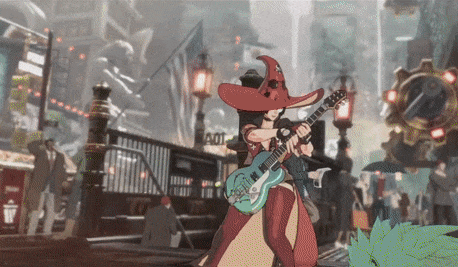

A mysterious witch with the power over time. She was born as a result of the crusade, where humanities collected will be so strong it morphed the alternate dimension known as the Backyard. It was so strong, all the magical energy formed needed an outlet, and chose the body of an average girl and gave her godlike power. The person is known as the Original who first found the backyard found I-No in this state and halved her energy out of fear she could cause damage to the world with so much energy. As a result of her weird origin, the universe calculated her as some kind of error in time resulting in Axl Low getting affected as they became linked somehow resulting in his spontaneous time travel to the future.
Eventually, I-No went on to be a servant for That Man and would continue to try and kill Sol, thinking those were his orders. She would continue to try and fail, and That Man would punish her, since he in fact wanted Sol alive for his plans. Eventually Jack-O' would be woken up by I-No and would follow and look over her. After meeting up again with Axl, eventually Jack-O' reveals to her the truth of her past and that That Man only hired her to keep an eye on her to make sure her power doesn’t go out of control. She quits working for That Man following the crisis of the out-of-control Universal Will.
She would become bitter and unhappy following the truth of her past and realized she had no joy left and wanted to make all of humanity understand the feeling she had. It is revealed that similarly to Axl who lost his love in the time travel, she lost hers as well. She would team up with Happy Chaos and his bodyguard Nagoriyuki to enact their plan of making I-No full again. Eventually, their plan succeeds, and she becomes a god-like being again and seeks to make all of humanity equally powerful, disregarding the dangers to the world. She is confronted eventually by Sol, Ky, Axl, Jack-O', and the now free Nagoriyuki. Through their combined effort, they find her weak spot and stop her once and for all, and in her final moments she realizes Axl is the alternate timeline version of her lost love Will. As she dies, she uses the last of her power to bring Megumi to the present for Axl.
